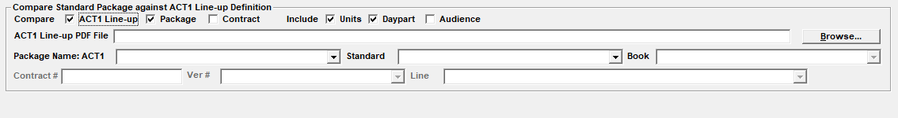

Compare Act 1 Lineup to Packages
The Act 1 Lineup Comparison utility is used to compare the stations, unit counts, and audience, on an Act 1 Lineup PDF file, with the stations defined as being part of a standard package, and to a contract, to find any differences. This utility is only enabled if stations are defined as vehicles.
To start the utility, select Accessories -> Utilities -> Compare Act 1 Line-up to Packages.
This picture shows the selectivity options for running the utility.

Compare: These checkboxes are used to pick what will be compared. At least two and up to three of these three options must be selected in order to run the utility.
- Act 1 Lineup: check this checkbox if an Act 1 Lineup file is available to compare to. This is a special PDF file that includes station audience data.
- Package: check this checkbox if a standard package exists in the Traffic that needs to be compared.
- Contract: check this checkbox if there is a contract with standard packages to compare to.
Include: These checkboxes determine which output fields will be shown for each comparison item that was selected.
- Units: check this checkbox if unit counts should be displayed.
- Daypart: check this checkbox if the daypart should be displayed.
- Audience: check this checkbox if the audience numbers should be displayed.
Act 1 Line-up PDF File: Use the browse button to browse to and select an Act 1 Line-up PDF file that will be used for the comparison. (Only active when the Act 1 Lineup is being used as part of the comparison.)
Package name Act 1: After the Act 1 Line-up PDF file has been selected, this dropdown menu will be populated with the packages detected on the file. Select the package you wish to use during the comparison from this dropdown list.
Standard: This dropdown menu lists standard packages that are defined in the Traffic system. Pick the standard package to compare to from this list. (This is only active when the “Package” checkbox is checked on.)
Book: This dropdown menu lists the available research books. Choose the research book to get the research book audience numbers from for the comparison. (This choice is grayed out if the Include Audience checkbox is not checked.)
Contract #: Type in the contract number that is being used for the comparison. (This is only available when the “Contract” checkbox is checked on.)
Version #: Choose the contract version number to compare to.
Line: Pick the contract line number to use for the comparison. Only the package line numbers are shown.
To run the utility, after choosing the selectivity options in the top part of the screen, press the Compare button. The results will be shown in a grid, which can also be exported to a file by pressing the Export button.
The display order is as follows:
- Stations in the ACT1 Line-up but not in the standard package and contract.
- Stations in the standard package but not in the ACT1 Line-up and contract.
- Stations in the contract but not in the ACT1 Line-up and standard package.
- Stations required in all three places but missing in one.
- The stations match but units counts don’t match.
- All fields match.
The contents of the grid of results will vary depending on the selectivity options that were chosen. The following fields are used:
Vehicle: The vehicle section lists the Act 1, package, and contract vehicles (stations) that were found. If the vehicle font color is red, it means the vehicle was not found in at least one of the chosen comparison options (Act 1 Lineup PDF, standard package, or contract). A black font color means the vehicle was found in all of the selected comparison options.
Units: The unit count is shown. The Act 1 unit count is pulled from the Act 1 Lineup file, and is typically either 1 or 2. A 2X unit count is detected as 2 units. The package unit count is pulled from the standard package unit definition. The contract unit count is the total unit count for that hidden line. If the Act 1 and the standard package unit count do not match, the unit count font color will be red. A black unit count font color means the unit counts match between Act 1 and the standard package. Because the contract unit count is the total unit count for the contract line, if the contract spans multiple weeks, the contract unit count will likely be higher than the Act 1 and Package unit count.
Daypart: This section shows the daypart extracted from the Act 1 Lineup definition, the standard package line, and the hidden line from the contract. When the detected daypart does not match among the selection comparison options, the daypart is shown in magenta. Note that small but insignificant text differences can result in the daypart being detected as different. For example, the Act 1 daypart might be detected as “MF 7a-10a” (with two spaces between the days and times), while the package daypart might be MF 7a-10a (with one space between the days and times).
Audience: When the “Audience” checkbox is checked on, the following information is shown in the audience section:
- Act 1: the station audience detected on the Act 1 Lineup file.
- Package: the station audience detected from the selected research book.
- Contr: OV: the audience from the contract, using the contract line daypart override.
- Contr: DP: the audience from the contract, using the original, non-overridden contract daypart, to show what the audience would have been if the contract line had been entered without an override.
Analysis must be performed of the results to see if there are differences that must be corrected. If there are differences between the stations in the Act 1 Lineup and the standard package and contract, the standard package can be edited to make it match the Act 1 Lineup, by adding or removing stations and adjusting the unit counts. Editing the standard package in this way will make it so that the next time the standard package is added to a contract, it will have the latest edited stations and unit counts. (After editing a standard package like this, run the comparison again to verify that there are no longer any discrepancies.) If previously entered contracts with previously entered packages need to be corrected, they can be edited on the Proposals or Orders screen by adding or removing stations and spots as needed.
Note: this comparison program works by getting the lineup name and daypart from the Act 1 lineup file, which is used to get the stations from the Act 1 lineup file when there’s a matching lineup name and daypart. The lineup name and daypart defined for the station on the Act 1 file must match the lineup name and daypart defined at the top of the file. This means if there’s a station listed for a lineup with a daypart that does not match the daypart listed at the top of the file for that lineup, then that station will not be included as being part of that lineup. For example, there could be a lineup called “AAA” with no daypart defined in the header area of the Act 1 Lineup PDF file. It might have the words “Stored schedule” or something similar, instead of a daypart name, while the individual rows of stations are defined for the lineup “AAA” and have an actual daypart listed. Even though the lineup name matches, because the daypart name doesn’t match as well, that station will not be included as part of the Act 1 lineup for the purposes of doing the comparison.